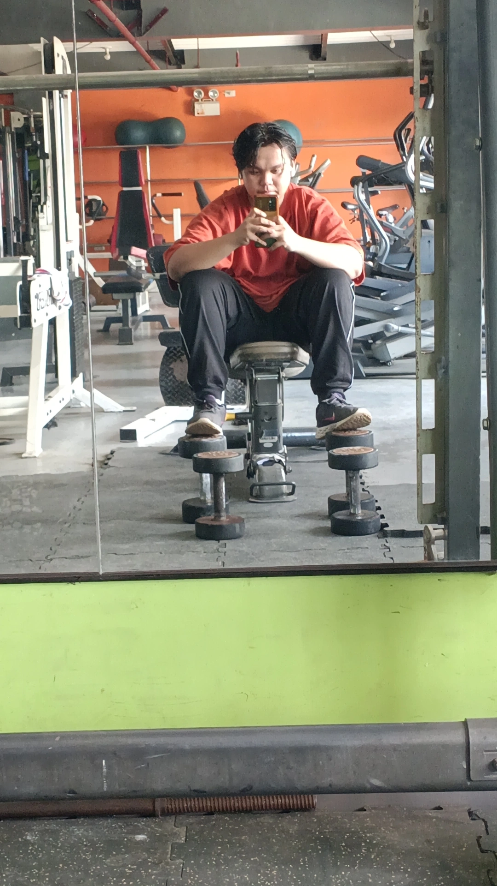
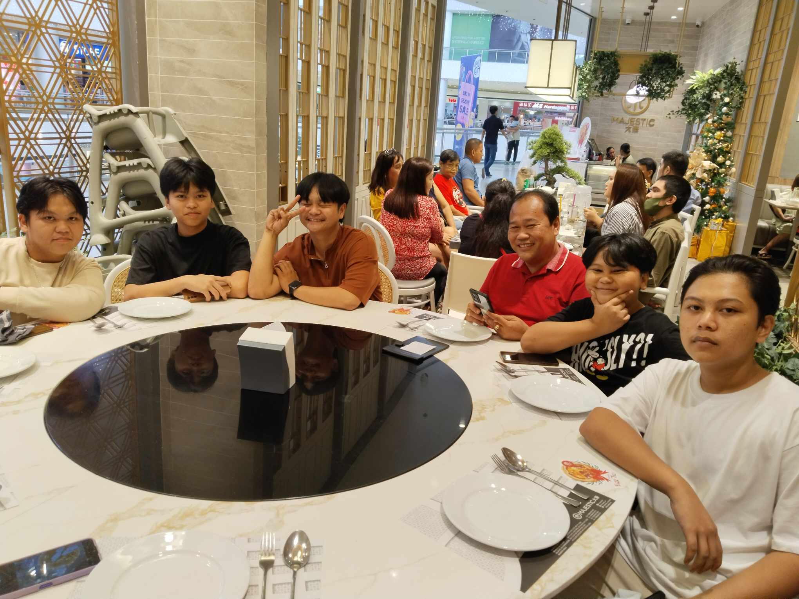

First Phase
The First Chapter: From Baby to Kid
I was born on February 12, 2003, marking the beginning of my journey in this world. Like all newborns, my earliest days were filled with warmth, care, and discovery. Though I don’t remember much from my infancy, I’ve heard stories of my first words, clumsy steps, and the joy I brought to my family.
As I grew into a toddler, my world expanded beyond the comfort of my home. I learned to explore, question, and play. Every day felt like a new adventure, whether it was discovering colors, making friends, or experiencing my first day of school. Curiosity fueled my early years, shaping my personality and interests.
By the time I entered childhood, I had developed a sense of wonder about the world. I was fascinated by stories, eager to learn, and always ready for fun. These early years laid the foundation for who I would become—full of dreams, energy, and an unquenchable thirst for knowledge.
Second Phase
Discovering Connections: Friendship, Love, and the World Around Me
As I grew older, I began to see the world beyond my childhood curiosity. I became aware of the people around me, forming friendships that shaped my experiences and taught me the value of trust and companionship. These bonds were built on laughter, shared struggles, and countless memories that became a part of who I am.
Alongside friendships, I also experienced the excitement and uncertainty of romantic feelings. Crushes, first loves, and heartbreaks all played a role in teaching me about emotions, commitment, and the complexities of human connection. These relationships, whether lasting or fleeting, gave me insight into myself and others.
Beyond personal connections, I started understanding society—its beauty and flaws. I became aware of different perspectives, responsibilities, and the impact of my choices. This phase of my life wasn’t just about relationships but about finding my place in the world and understanding what truly matters.
Third Phase: The present 2024
2024: The Year That Changed Everything
Turning 21 in 2024 was a milestone that marked not just another year of my life but a turning point in my journey. Everything I had learned over the years—the lessons from friendships, hardships, love, and personal growth—had shaped me into who I am today. By the end of 2023, I felt the need for change, and as 2024 began, I took control of my life with a new mindset. This year became the foundation of my transformation, where I started building the future I once only dreamed of.



And it truly became the best year of my life. One of the biggest transformations was my commitment to fitness. I finally became consistent at the gym, something I had struggled with before, and the results were life-changing. Losing 20 kg wasn’t just about looking better—it was about feeling stronger, healthier, and more confident in my own skin. That discipline spilled over into other areas of my life. I started learning again, exploring new ideas, and planning my future with more clarity and purpose. I found a way to balance my academics while still enjoying time with my friends, proving to myself that growth and fun didn’t have to be separate.
But among all these achievements, the true highlight of my 2024 was her. She wasn’t just a fleeting moment or a passing phase—she became a significant part of my life in ways I never expected. She made everything more meaningful, filling my days with laughter, warmth, and a connection I hadn’t felt before. Her presence in my life was a reminder that change isn’t just about self-improvement but also about the people who make the journey worthwhile. Looking back, I can say with certainty that 2024 was the year everything changed, not just because of what I accomplished, but because of the love, growth, and happiness that defined it.